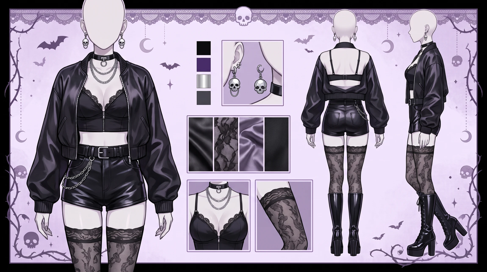
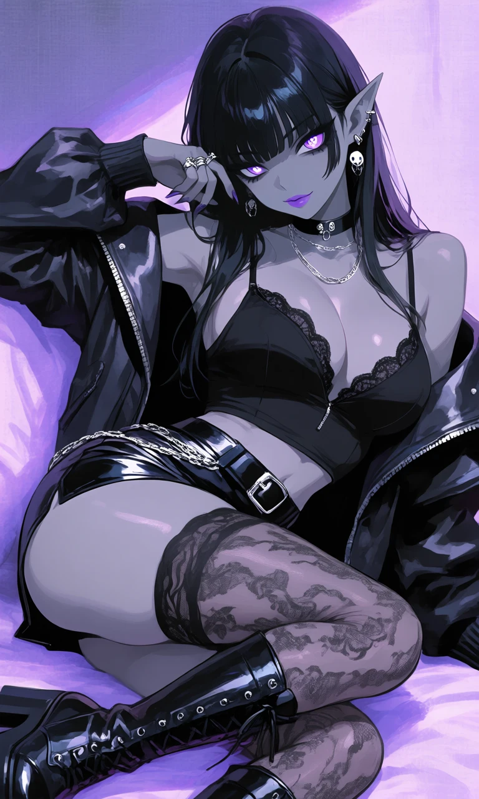
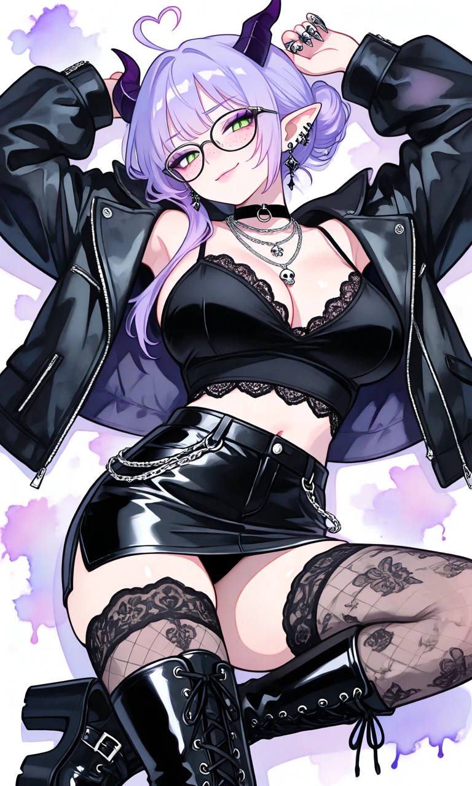

Silver Skull Club

Outfit Prompt
Daring gothic modern outfit, provocative alternative streetwear, edgy feminine fashion, dark romantic aesthetic, coordinated black and silver color palette.
A fitted black cropped camisole with thin spaghetti straps, a deep plunging V-shaped neckline, and delicate black floral lace trimming along the neckline and hem. Smooth black satin-like fabric with subtle sheen, fitted closely around the torso. The cropped hem ends above the navel, exposing the midriff.
A very short low-rise black leather mini skirt resting below the natural waistline, featuring a fitted silhouette, smooth slightly glossy leather texture, and a hem ending high on the thighs. Decorative silver metal hardware includes small side buckles, metallic eyelets, and a short silver chain hanging loosely from one hip. A concealed side zipper provides a clean fitted appearance.
Sheer black patterned thigh-high stockings featuring delicate gothic floral lace patterns, subtle diamond-shaped mesh details, and wide lace bands around the upper thighs. The stockings leave a visible section of bare thigh between the skirt hem and stocking tops.
Tall black platform boots reaching just below the knees, featuring thick chunky platform soles, high block heels, rounded toes, and long front lace-up closures with silver metal eyelets. Smooth black leather construction with decorative silver buckles along the outer sides.
An oversized black jacket worn loosely draped from the shoulders, featuring a relaxed silhouette, wide lapels, long sleeves, silver zipper details, and slightly glossy black leather-like fabric. The jacket hangs open, leaving the cropped camisole visible.
A fitted black velvet choker with a small silver ring at the center.
Several layered silver chain necklaces in different lengths, including a short chain with a tiny silver skull pendant.
Multiple silver rings featuring gothic motifs, dark gemstones, and decorative claw-shaped settings.
Dark silver dangling earrings with small black crystal accents.
Edgy gothic fashion, daring revealing silhouette, dramatic black leather textures, delicate lace details, chunky platform footwear, layered silver accessories, rebellious alternative streetwear aesthetic.
Outfit Examples



